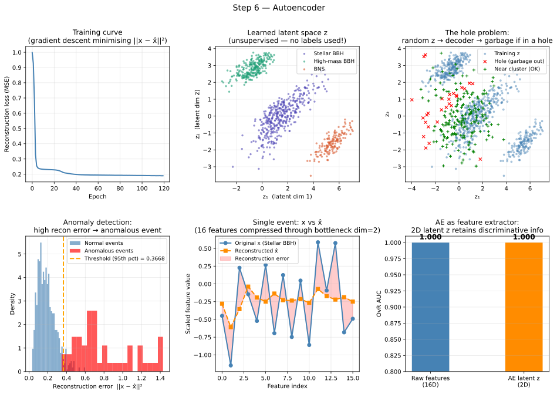

Machine Learning from Scratch: a Physicist's Road to Generative Models VI
Section 6: Autoencoders: Learning to Compress
The wall we hit in Section 5
Section 5 introduced density estimation, that is, learning \(p(x)\) directly from unlabelled data. We saw that classical methods (histograms, KDE, GMM) work well in one or two dimensions but collapse above roughly ten, because the volume of high-dimensional space grows so fast that data becomes hopelessly sparse. We left with a wish list: a model that can represent complex densities in high dimensions, has a tractable log-likelihood for training, and can generate new samples.
We will not arrive at that model immediately. Instead, Sections 6 and 7 build the conceptual scaffolding piece by piece. Section 6 introduces the autoencoder, a neural network that learns to compress high-dimensional data into a compact representation, and then reconstruct the original from that representation. It is not yet a proper generative model, but it introduces the latent space \(z\) that will be central to everything that follows, and it solves real physics problems on its own terms.
A new tool: PyTorch in two minutes
Sections 1–5 used sklearn,
which hides the training loop inside a fit() call.
From here onwards we need to define our own loss functions and our own
architectures, things that sklearn was not designed for. We switch to
, the standard framework for research-grade deep learning in physics.
Two concepts are all you need to start.
A tensor is PyTorch's version of a NumPy array. It behaves identically for arithmetic, but it can live on a GPU (Graphics Processing Unit) and, crucially, it tracks every operation performed on it so that gradients can be computed automatically.
import torch
w = torch.tensor(2.0, requires_grad=True) # one learnable parameter
L = (w - 5.0) ** 2 # loss = (w - 5)²
L.backward() # compute dL/dw automatically
print(w.grad) # → tensor(−6.) i.e. 2*(2-5) = −6
That single backward() call is backpropagation. PyTorch traced the computation
graph when we wrote (w - 5.0) ** 2, and it can differentiate through any
composition of operations, no matter how deep the network, no matter how
complex the loss.
An nn.Module is the base class for any neural network component. You define
a forward() method describing the computation, and PyTorch handles the backward
pass. Every layer (nn.Linear, nn.ReLU, and so on) is itself an nn.Module,
so networks are assembled by composing modules, exactly like composing
mathematical functions. This is the only PyTorch you need for this section. The architecture and training loop
that follow use nothing else.
The autoencoder: compress then reconstruct
An autoencoder is an hourglass-shaped neural network with two components joined at a narrow bottleneck.
The encoder \(E_\phi\) takes the \(D\)-dimensional input \(\mathbf{x}\) and maps it to a \(d\)-dimensional latent vector \(\mathbf{z}\), where \(d \ll D\):
\[ \mathbf{z} = E_\phi(\mathbf{x}) \in \mathbb{R}^d \]
The decoder \(D_\theta\) takes the latent vector and reconstructs an approximation \(\mathbf{\hat{x}}\) of the original input:
\[ \mathbf{\hat{x}} = D_\theta(\mathbf{z}) = D_\theta(E_\phi(\mathbf{x})) \in \mathbb{R}^D \]
The subscripts \(\phi\) and \(\theta\) denote the learnable parameters of the encoder and decoder respectively. The full model is the composition \(\mathbf{\hat{x}} = (D_\theta \circ E_\phi)(\mathbf{x})\).
It is important to be explicit here: \(E_\phi\) and \(D_\theta\) are not mysterious objects. Each is just a neural network, i.e. a sequence of mathematical transformations of the form \(W\mathbf{x} + b\), followed by a nonlinear activation.
In PyTorch, these transformations are implemented with one or more nn.Linear layers,
typically interleaved with nonlinearities such as nn.ReLU, nn.Tanh, or
nn.Sigmoid. So, at code level, both encoder and decoder are simply stacks like
Linear -> activation -> Linear -> ....
The loss function: reconstruction error
We want \(\mathbf{\hat{x}}\) to be as close to \(\mathbf{x}\) as possible. For continuous real-valued features, the natural measure of closeness is the Mean Squared Error (MSE):
\[ L(\phi, \theta) = \frac{1}{N} \sum_{i=1}^{N} \|\mathbf{x}_i - \mathbf{\hat{x}}_i\|^2 \]
This is the same MSE from section 1, the loss function did not change; only the model did. Minimising this loss over all parameters \((\phi, \theta)\) simultaneously is still gradient descent, still backpropagation, still the same algorithm as every previous step.
Why the bottleneck forces learning
Here is the key insight. If the latent dimension were \(d = D\), that is, no compression at all, the encoder could simply pass the input straight through and the decoder could copy it perfectly. The reconstruction loss would be zero without the network learning anything useful.
The bottleneck constraint \(d \ll D\) makes this impossible. The encoder is forced to discard information that is not essential and retain information that is. It cannot memorise every detail of every input; it must discover the underlying structure that is common across the dataset. In a GW context, if the input is a 16-dimensional feature vector, the encoder with \(d = 2\) must find the two numbers that best summarise which population the event belongs to, effectively performing non-linear dimensionality reduction automatically, without any labels.
The interactive diagram below shows the hourglass architecture and what happens when you sample latent points in different regions of the 2D space.
*Figure 1: Architecture tab: data flows left to right through the encoder (purple), is squeezed to a 2D latent code \(\mathbf{z}\) at the bottleneck (amber), then expanded back to the original dimension by the decoder (teal); the animated particles illustrate one forward pass. Latent space tab: each coloured cluster is one GW population as mapped by the encoder; click inside a cluster (green response) to see the decoder produce a plausible event, then click in a red dashed hole region to see what happens when the decoder is asked to reconstruct a point it was never trained on, the output is meaningless. The holes exist because the reconstruction loss \(\|\mathbf{x} - \hat{\mathbf{x}}\|^2\) places no constraint on where in \(\mathbb{R}^2\) the encoder is allowed to put its codes.*
Connection to Principle Component Analysis (PCA)
A brief aside: What is PCA?
Before we dive into the neural network version, we should mention Principal Component Analysis (PCA). PCA is the classic "old school" way to reduce dimensionality. It looks for the directions in your data (the "principal components") that have the most variance, i.e. the directions along which the data is most spread out.
By keeping only the top few directions and throwing away the rest, you project high-dimensional data onto a flat, lower-dimensional linear subspace (like projecting a 3D shadow onto a 2D floor). It is incredibly fast and useful, but it has a major weakness: it can only find flat structures. If your data is curved like a spiral or a "Swiss roll," PCA will see right through it and lose the essential shape.
Autoencoders as non-linear PCA
For a linear autoencoder, where both encoder and decoder are single linear layers with no activation functions and MSE loss, the latent subspace learned by the autoencoder converges to exactly the subspace spanned by the top \(d\) principal components of the data covariance matrix. In other words, PCA is a special case of the autoencoder with a linear architecture.
The deep non-linear autoencoder generalises this: instead of finding the best flat \(d\)-dimensional subspace (a hyperplane), it finds the best curved \(d\)-dimensional manifold. This is why autoencoders can discover non-linear structure that PCA misses.
What the latent space looks like
In the accompanying notebook, the dataset contains 800 simulated GW trigger events from three populations; stellar-origin BBHs, high-mass BBHs, and BNSs, represented by 16 features each. The autoencoder has a 2D bottleneck, so we can plot \(\mathbf{z}\) directly as a scatter plot. The figure below shows the result.

*Figure 2: Six panels. Top-left: training loss curve, MSE falls smoothly over 120 epochs as gradient descent minimises the reconstruction error. Top-middle: the 2D latent space coloured by population label (which the model never saw during training). Three distinct clusters emerge spontaneously, the bottleneck forced the network to discover population structure. Top-right: the hole problem, blue points are training-set latent codes; red crosses are random samples \(\mathbf{z} \sim \mathcal{N}(0, 1.5^2)\) that land far from any training point (holes); green plusses land safely inside clusters. Bottom-left: reconstruction error distributions for normal events (blue) and injected anomalous events (red); the orange threshold at the 95th percentile cleanly separates them. Bottom-middle: original vs reconstructed feature vector for one event, the red shading is the pointwise reconstruction error. Bottom-right: AUC of a logistic regression trained on raw 16D features vs on the 2D latent code, nearly identical, showing the latent code retains the discriminative information at 1/8 the dimensionality.*
The top-middle panel is the most striking result. The three populations separate clearly in 2D latent space, with no label information used at any point in training. The network discovered the population structure because it is the most efficient way to reduce reconstruction error: if you only have two numbers to describe each event, the most useful two numbers are ones that distinguish the main clusters.
Anomaly detection
One of the most practically useful applications of autoencoders in physics requires no generative sampling at all. It exploits a simple property of the reconstruction loss: if the model was trained on events from a known distribution, then events from a different distribution will generally reconstruct poorly, because the encoder has no good latent representation for them.
The procedure is:
- Train the autoencoder on your background or "normal" (usually background) events.
- For every new event, compute the reconstruction error \(\|\mathbf{x} - \hat{\mathbf{x}}\|^2\).
- Flag events whose reconstruction error exceeds a threshold as anomalous (these are rare intersting physics events).
No signal model is needed. No labels are needed for the anomaly class. The threshold is set by choosing an acceptable false positive rate on held-out normal events, exactly the same ROC-curve logic as section 2.
In the bottom-left panel of Figure 2, the reconstruction error for 50 injected anomalous events (red) is clearly shifted to higher values than the training population (blue). The 95th-percentile threshold (orange dashed line) detects most anomalies while misclassifying only \(\sim 5\%\) of normal events. This approach has been used in ATLAS and CMS anomaly searches for new physics (e.g. Andrew Brinkerhoff et al. 2025), in LIGO glitch classification, and in radio telescope RFI rejection, anywhere that a model of "what normal looks like" is available but a model of "what the anomaly looks like" is not.
The fundamental limitation: holes in latent space
The autoencoder has a structural problem that becomes apparent the moment you try to use it as a generative model, i.e. to sample new events by drawing a random \(\mathbf{z}\) and decoding it, i.e. generating a new event \(\mathbf{x}\).
The issue is that the encoder places the training latent codes wherever it wants in \(\mathbb{R}^d\). It has no incentive to fill the latent space continuously or smoothly. It only needs the decoded output to match the input for the specific \(\mathbf{z}\) values it actually uses during training, \(\mathcal{Z}_{\text{data}} = \{E_\phi(\mathbf{x}_i)\}_{i=1}^N\). The behaviour of the decoder everywhere else is unconstrained.
The result is an uneven scatter of clusters with empty regions, i.e. "holes", between them. If you sample \(\mathbf{z} \sim \mathcal{N}(0, I)\) at random, roughly half the samples will land in these holes. The decoder, forced to produce something, outputs a confused average of unrelated training patterns, i.e. physically meaningless. For example, if the autoencoder was trained on detector images, and you sampled a random \(\mathbf{z}\) and decoded it, the output would be a confused average of unrelated detector images.
This is not a training failure. It is a fundamental consequence of the loss function. The reconstruction loss \(\|\mathbf{x} - \mathbf{\hat{x}}\|^2\) says nothing whatsoever about what \(\mathbf{z}\) should look like. The encoder is free to place codes anywhere, and it does, i.e. wherever makes reconstruction easiest, regardless of whether the resulting space is smooth or sampleable.
The top-right panel of Figure 2 makes this concrete. The blue cloud is the training-set latent codes. The red crosses are random \(\mathcal{N}(0, 1.5^2)\) samples that land in holes, roughly half the total. The green plusses land inside the training cloud and would produce plausible reconstructions. Generating new events by sampling at random is unreliable precisely because of this imbalance, because of the holes in the latent space.
Regularised variants
Several modifications to the basic autoencoder address specific problems without solving the hole problem completely.
Denoising Autoencoders
A denoising autoencoder corrupts the input before encoding it, adding Gaussian noise, masking random features, or applying dropout to the input vector, and trains the decoder to reconstruct the clean original from the corrupted code. This forces the encoder to learn representations that are robust to small perturbations, rather than memorising the exact input. The denoising autoencoder loss is:
\[ L_{\text{DAE}} = \mathbb{E}_{\mathbf{\tilde{x}} \sim q(\mathbf{\tilde{x}} \mid \mathbf{x})} \left[ \|\mathbf{x} - D_\theta(E_\phi(\mathbf{\tilde{x}}))\|^2 \right] \]
Imagine trying to recognise your friend's face in a blurry photo. To get good at this, you might deliberately blur pictures of them and practice identifying the crisp features anyway. That is exactly what this math represents:
- \(\mathbf{\tilde{x}}\) (read as "x-tilde") is the corrupted, "blurry" version of the data.
- \(q(\mathbf{\tilde{x}} \mid \mathbf{x})\) is just the rule for adding the noise (e.g., "randomly drop 10% of the pixels").
- \(\mathbb{E}\) stands for "Expectation" or average. We are calculating the average error across all the different random ways we could corrupt the image.
- The core equation \(\|\mathbf{x} - D_\theta(\dots)\|^2\) is still just measuring the distance between the perfectly clean original data (\(\mathbf{x}\)) and the decoder's attempt to rebuild it from the noisy version.
... where \(q(\mathbf{\tilde{x}} \mid \mathbf{x})\) is the corruption distribution. In practice this regularises the representation without any explicit penalty term, and it is conceptually close to what dropout does in the hidden layers of a classifier.
Sparse Autoencoders
A sparse autoencoder adds an explicit penalty on the activations of the hidden layer, encouraging most neurons to be inactive for any given input:
\[ L = L_{\text{recon}} + \lambda \sum_j |h_j(\mathbf{x})| \]
Think of a sparse autoencoder like a company meeting where every person who speaks charges the company $100. You want to communicate the information (good reconstruction) using the absolute fewest number of speakers possible.
- \(L_{\text{recon}}\) is the standard reconstruction error we saw earlier (how well the output matches the input).
- \(h_j(\mathbf{x})\) represents the activation level (the "loudness") of neuron \(j\) in the bottleneck layer.
- The sum of absolute values \(\sum |h_j|\) acts as a "tax". Every time a neuron activates, the loss goes up.
- \(\lambda\) (lambda) is a dial that controls how heavy this tax is. By trying to keep the overall loss \(L\) low, the network learns to turn off (make zero) as many neurons as possible, leaving only a few highly specialised neurons active for any specific input.
This forces the network to represent each input using a small number of active neurons, i.e. a dictionary-like code where each dimension has a specific meaning. This is used in neuroscience-inspired models of sensory cortex and in feature visualisation for large language models.
However, neither of these cures the hole problem, because neither constrains the distribution of the latent codes \(\mathbf{z}\). That requires a fundamentally different approach, which we will discuss in the next section.
What the code does
The hands-on material for this section is in a dedicated Jupyter notebook in the accompanying GitHub repository ↗. Each section of this series has its own notebook, so you can work through them independently and at your own pace without wading through unrelated code 😇.
The accompanying tutorial notebook ↗ is divided into seven parts.
Part A is a two-minute PyTorch primer that runs before any neural network: it creates a
single tensor, computes a loss, calls .backward(), and prints the gradient.
Read the printed output carefully, that one-parameter example is the entire
backpropagation algorithm in miniature, and everything in Parts C through G is a
scaled-up version of exactly that.
Part B generates the three-population GW dataset: 400 stellar BBHs, 250 high-mass BBHs, and 150 BNSs, each described by 16 features with embedded non-linear correlations. The class imbalance is intentional, it mirrors the realistic ratio of event types in a real catalogue.
Part C defines the autoencoder architecture as three nn.Module classes,
Encoder, Decoder, and Autoencoder, and prints the
parameter count broken down by layer. Verify the arithmetic by hand for the first layer
\((16 \times 64 + 64 = 1,088)\) before reading on; this makes the weight matrix concept
concrete.
Part D is the training loop. It is written explicitly rather than hidden inside a
.fit() call, so you can see every step: optimizer.zero_grad()
clears the previous gradient, the forward pass produces x_hat,
loss_fn computes the MSE, .backward() propagates gradients, and
optimizer.step() updates all parameters. This loop runs 120 times; the printed
loss at every 20th epoch should fall by roughly a factor of two from start to finish.
Part E encodes the full training set to 2D and computes per-population reconstruction errors. The key number to check here is whether the three populations have comparable reconstruction errors, if one is significantly higher, the bottleneck is too small to represent that population faithfully.
Part F demonstrates anomaly detection by injecting 50 events drawn from a completely
different distribution and showing that the 95th-percentile reconstruction threshold
catches most of them. Try changing the anomaly distribution from rng.normal(5.0, 1.5)
to something closer to the training distribution (rng.normal(1.0, 0.8)) and
observe how the detection rate degrades, this shows the fundamental limit of
reconstruction-based anomaly detection when the anomaly resembles the background.
Part G is the most instructive part of the script. It samples 200 random points from \(\mathcal{N}(0, 1.5^2)\) in the 2D latent space, measures the distance of each to its nearest training code, and classifies it as a hole if that distance exceeds 0.8. The printed fraction, typically around 40–50%, is the empirical hole rate. Increase the latent dimension from 2 to 8 and rerun: the hole fraction will climb steeply, because the training codes occupy an increasingly small fraction of the higher-dimensional latent volume. This is the curse of dimensionality appearing again, now inside the latent space rather than in the original feature space, and it is the quantitative argument for why the VAE's (variational autoencoders will be the topic of the next section) regularisation is not optional.
What comes next
The hole problem has a clean solution, and it requires adding exactly one new term to the loss function. Instead of training the encoder to produce a single point \(\mathbf{z} = E_\phi(\mathbf{x})\), we train it to produce a Gaussian distribution:
\[ q_\phi(\mathbf{z} \mid \mathbf{x}) = \mathcal{N}(\boldsymbol{\mu}_\phi(\mathbf{x}), \boldsymbol{\sigma}^2_\phi(\mathbf{x})) \]
and we add a penalty that pulls this distribution toward \(\mathcal{N}(\mathbf{0}, \mathbf{I})\). Because every input maps to a spread-out Gaussian rather than a single point, the latent space becomes continuously covered with no gaps. Any sample from \(\mathcal{N}(\mathbf{0}, \mathbf{I})\) will land inside a trained region and produce a meaningful output.
The penalty term that accomplishes this is the KL divergence between \(q_\phi(\mathbf{z} \mid \mathbf{x})\) and the prior \(p(\mathbf{z}) = \mathcal{N}(\mathbf{0}, \mathbf{I})\). The next section derives this term from first principles, starting from Bayes' theorem and the evidence lower bound, and builds the full variational autoencoder.
The running scorecard
The last cell of the final column captures everything: the autoencoder can decode any latent vector \(\mathbf{z}\), but because the latent space has holes, generation is unreliable. Section 7 fixes that by introducing the Variational Autoencoder.
Comparison of Learning Paradigms
| Feature | Regression | Classification | Density Est. | Autoencoder |
|---|---|---|---|---|
| Output | \(\hat{y} \in \mathbb{R}\) | \(p \in [0, 1]\) | \(p(x) \geq 0\) | \(\hat{\mathbf{x}} \in \mathbb{R}^D\) |
| Loss | MSE | Cross-entropy | \(-\log p(x)\) | MSE (recon) |
| Labels? | Yes | Yes | No | No |
| Learns | \(p(y \mid x)\) | \(p(y \mid x)\) | \(p(x)\) | \(\mathbf{z} = E(\mathbf{x})\) |
| Can generate? | No | No | Yes (KDE/GMM) | Unreliably |